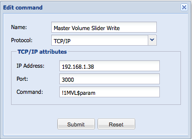

Hi, I asked this in the chat, but this is the better place for this kind of questions.
How should the slider widget send a command that contains it's slider value? For example when I move the slider, I would like to send commands similar to these "light1_255", "light1_45" and so on, where the number in the end is the slider value.
How you implement the dimming command in X-10? I guess you use the slider to control the dimming?
{kind=link}
|
Anybody? I guess this is a trivial question... how you implement X-10 or KNX dimming via slider? |
|
Hmm, 2 months later there is still no answer about this... why so? I guess I'm not asking something exotic? It's a common question when building an interface. What's the status of version 2.0? Is there gonna be an event system and rule system in the next version? |
|
Command parameters, including slider values, are explained here: Controller 2.0 API Documentation |
|
Thanks, I know that documentation, but this describes the REST commands for communication between ORB and some interface software. My question is how you pass these values to the serial, TCP, IR and other interfaces? If I have a hardware that waits for a TCP command similar to "light1_255", where 255 is a value taken from a slider, how could I form that command? Maybe I have to write my own driver for that hardware? |
|
Will need to add some $[param] handling for generic interfaces (they will need a scripting interface too, later) – haven't added that yet. Thanks for pointing it out. |
|
That's really nice to hear I guess this scripting interface is not going to be part of a version 2.0? Maybe version 3.0 next year or there is a chance we could see it sooner? |
|
Full scripting interface is definitely an item for 3.0 release, I've no fixed timeline for 3.0, going to spend next couple of months stabilizing, testing and fixing the 2.0 codebase and documenting and revamping the website. Roughly I'd estimate 3.0 to be code complete before the end of the year. |
|
BTW, your hardware, earlier you said you were using Arduino to build it, is that still the case? |
|
YES and NO. I have a partly working prototype using Arduino Mega, but Arduino has not enough horsepower to run my 32 dimmer channels and to do the fancy stuff I would like to do. So, now I'm thinking of using something like mini2440 with Linux. Why are you asking? |
|
Quite interested in what people are doing with Arduino in home automation space, in particular with a view towards IP-to-protocol translators (no app logic), sensors, etc. Therefore the question, what is the fancy stuff you're talking about... resource intensive software/application logic? |
|
Yes, I do phase control to 32 AC dimmer channels. In the same time I need several running PID functions to do a thermostat logic, watching 64 digital inputs and 8 analog inputs and do things on events. All this I would like to be configurable with web interface hosted on the same Arduino. This is a lot of work for a 16 Mhz AVR CPU with 8 KB of SRAM, but as I'm a newbie in the hardware area, I had to learn it the hard way. Arduino is a great microcontroller with great community and there are several interesting projects on the HA scope. |
|
Your feature is in subversion. Still needs to be integrated, tested and deployed online but getting there.... |
|
What feature? The $param handling or the whole scripting interface? |
|
$param handling |
|
Thanks a lot. I hope we could see this functionality integrated soon. |
|
Is the $param handling already implemented? I'm thinking right now how could I get a temperature from a sensor and display it on the iPhone console. I'm developing my own protocol in ASCII format and the message contains the temperature as an ASCII text ("32.5" for example). I use TCP/IP to Serial software to route the messages from OR to a USB port. Is this $param handling is going to work for me in that case and how? I'm a little bit confused how to work with sensors in OR. |
|
Yes, though you will only need it for parameterized write commands, not passive read commands (like temperature readings). For your temp protocol, returning the value as string would be sufficient in your protocol implementation – map your device read command to a range sensor and your your string will be interpreted as an integer value. You can then bind your sensor to a label UI component that will display the value as text in the User Interface. Let me know if you need more detailed steps how to achieve this in the online designer. |
|
Hi, Hoping you can help once again? Can you tell me the layout in the UI builder for a write command with a $param i.e. from the slider, with TCP/IP. Attached is a screen shot example of what Ive trying to achieve, hopefully self explanatory  Thanks Phill |
|
The format for command should use ${param} |
|
Hi Juha, Thanks, still a little confused. Do i need to define what/where the $ Unknown macro: {param} comes? What does it map to?
My readers are tcp/ip custom name/values because of their structure (!1MVL00 ->!MVL80) I need to write the same command structure with a changed value of 00-80. Will the Slider work with this ? Phil |
|
The value of ${param} is mapped by the slider component. It in turn gets its minimum and maximum values based on the sensor it is bound to – range 0-100 if its a level sensor, or arbitrary integer values if you've bound the slider to a range sensor. In your case it should be a range sensor where you've set the min/max values to 0 and 80. It is a little confusing, I've been planning to make a full tutorial out of it – I need to dig up some devices that give me range values first. |
|
These might also help:
|
|
I see.. The issue I'm facing is my Onkyo amp commands are ASCII strings not ranges or levels. Example: I want to know what the master Volume level is. Send Read Command: !1MVLQSTN Amp Reply: !1MVLXX (where XX is the volume level) I could write a new interface based on the TCP/IP and convert the values to those expected for the UI components, but it does seem very generic to me, you end up with lots of very similar protocol implementions, that are really just formatters. If the Cutsom Key/Value Map was linked to the $ Unknown macro: {param} of the slider in the same way as the level or range then a more generic approach would allow me to define all the possible Amp Replys for the Master Volume as the Key (!1MVL00-80) and use a defined Value (0-80) for the Slider range.
Make sense ? Phill |
|
Yes – we've mostly done these for dedicated protocols so far (KNX) but the generic protocols do need special expressions to avoid multiple protocol implementations (telnet, http and tcp/ip) – plan on working on those for some short term solutions, over long term mapping them to scripts will be the ideal solution. |
|
Juha, In which branch is this implemented? Thanks, |
|
Depends what you need exactly? People on this thread are talking about parameterizing different things. The slider value parameterization (original question) is currently bolted in as an attribute to the XML Element in CommandBuilder API:
public XXX implements CommandBuilder {
public Command build(Element element) {
String paramValue = element.getAttributeValue(Command.DYNAMIC_VALUE_ATTR_NAME);
...
}
The attribute is currently only set for sliders: Which comes from the REST API: /rest/control/{control_id}/{commandParam} |
|
Thanks, that's what I was looking for. |
|
ok, great It needs a better API but will deal with that later. |
|
Eric, I will need this for the Russound support soon also. --Marcus |
|
I did commit part of it (see separate thread on Lutron HomeWorks implementation), the code for handling the slider is not in yet but should be by the end of the week. Eric |